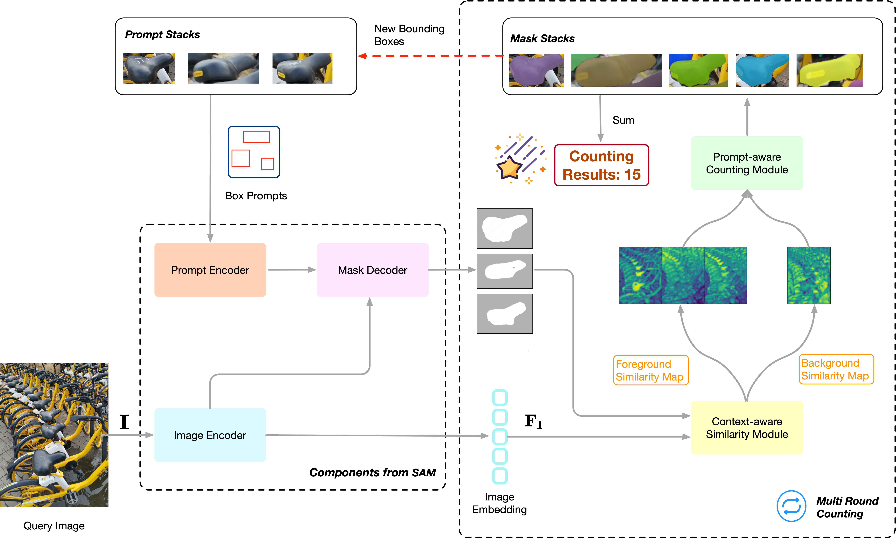

Object counting is a challenging task with broad application prospects in security surveillance, traffic management, and disease diagnosis. Existing object counting methods face a tri-fold challenge: achieving superior performance, maintaining high generalizability, and minimizing annotation costs.
We develop a novel training-free class-agnostic object counter, TFCounter, which is prompt-context-aware via the cascade of the essential elements in large-scale foundation models. This approach employs an iterative counting framework with a dual prompt system to recognize a broader spectrum of objects varying in shape, appearance, and size. Besides, it introduces an innovative context-aware similarity module incorporating background context to enhance accuracy within messy scenes.
To demonstrate cross-domain generalizability, we collect a novel counting dataset named BIKE-1000, including exclusive 1000 images of shared bicycles from Meituan. Extensive experiments on FSC-147, CARPK, and BIKE-1000 datasets demonstrate that TFCounter outperforms existing leading training-free methods and exhibits competitive results compared to trained counterparts.

Overview of our TFCounter. TFCounter is a segmentation-based model designed for training-free, class-agnostic object counting. It employs an iterative counting mechanism and links three key modules: feature encoding, context-aware similarity computation, and prompt-aware object counting.
Core Module
The context-aware similarity module utilizes the image embedding and all foreground masks to generate both foreground and background similarity maps.
The prompt-aware counting module performs weighted fusion on these similarity maps and operates a dual prompt system to produce target masks.
Qualitative and Quantitative Comparisons
Qualitative comparison on FSC147, CARPK, and BIKE-1000. The "prompt" represents box prompts for SAM-Free and TFCounter.
BibTeX
@article{park2021nerfies,
author = {Park, Keunhong and Sinha, Utkarsh and Barron, Jonathan T. and Bouaziz, Sofien and Goldman, Dan B and Seitz, Steven M. and Martin-Brualla, Ricardo},
title = {Nerfies: Deformable Neural Radiance Fields},
journal = {ICCV},
year = {2021},
}